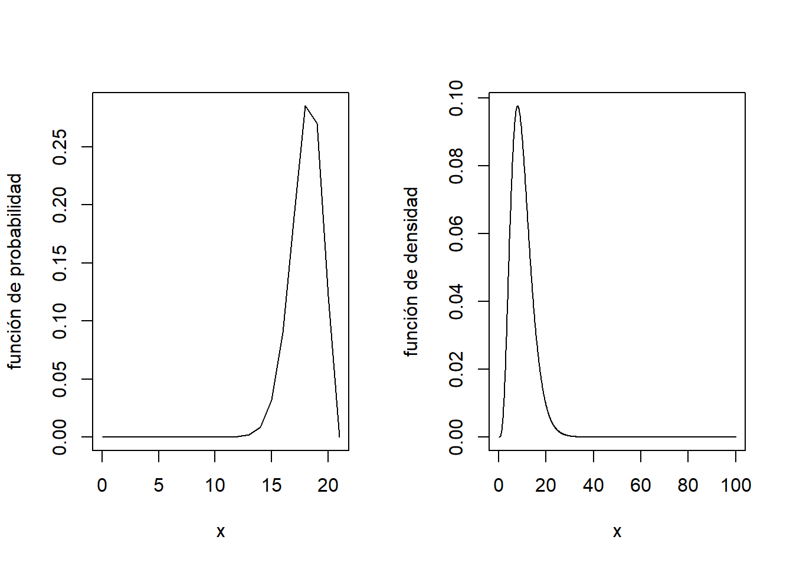
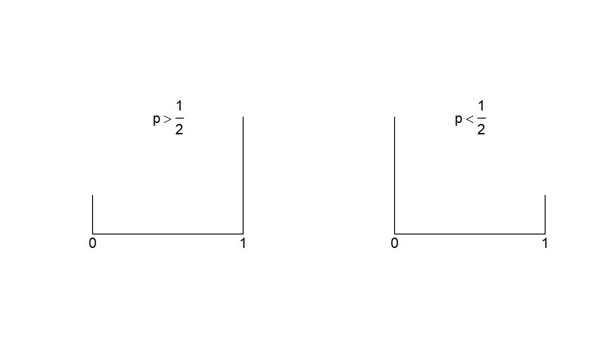
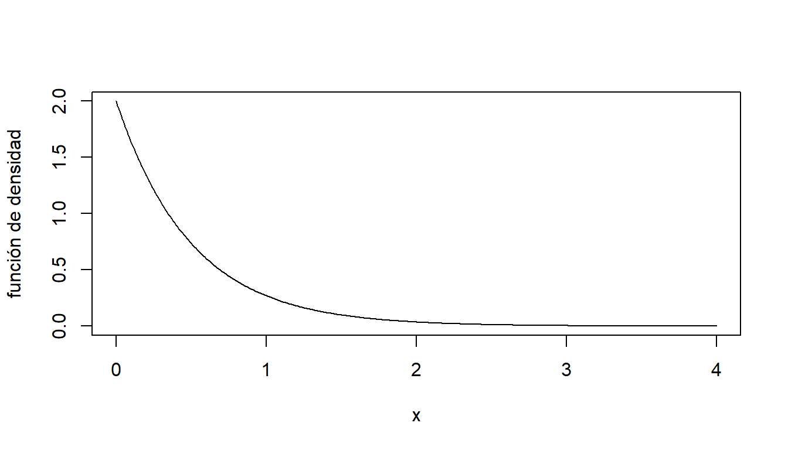
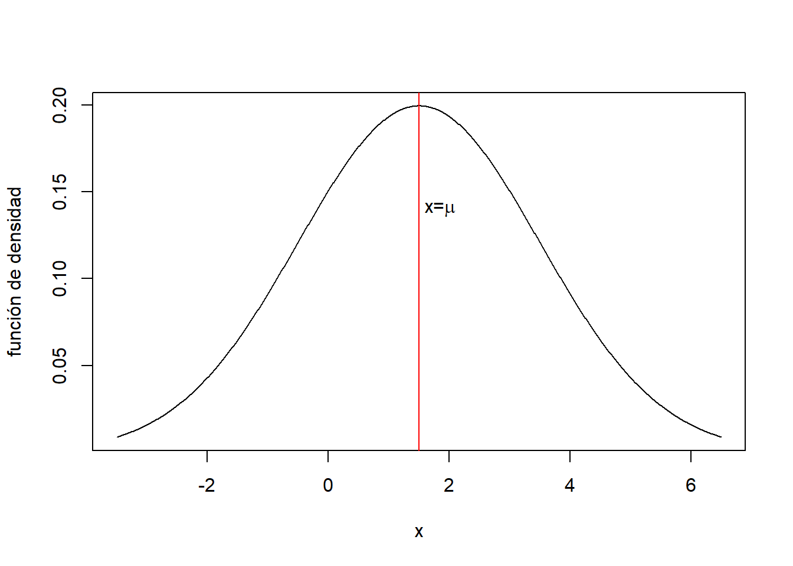
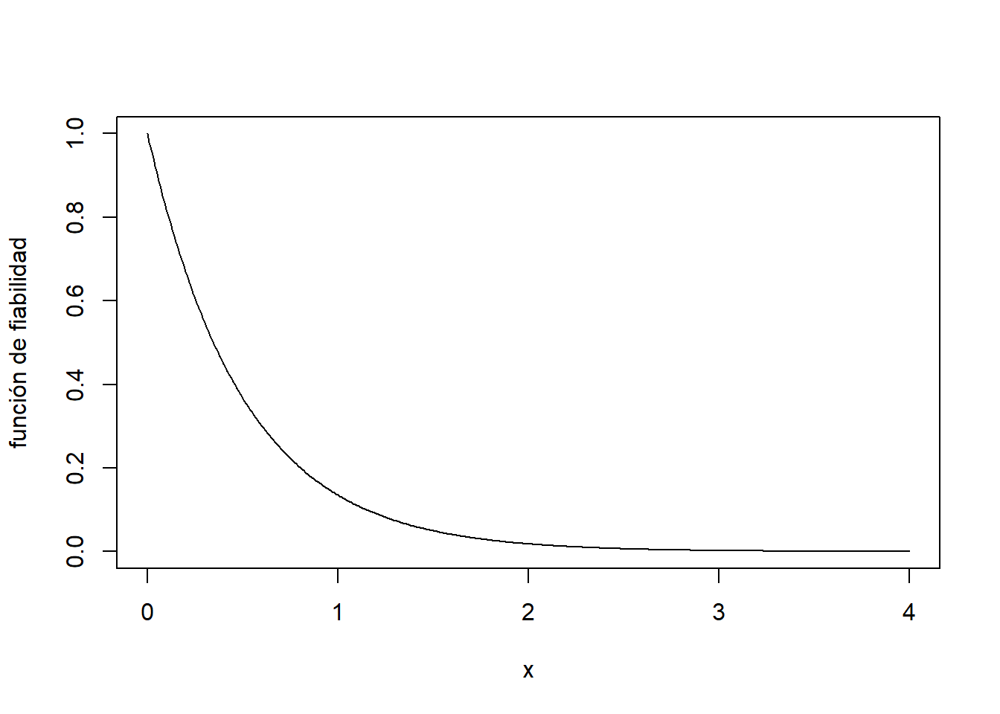
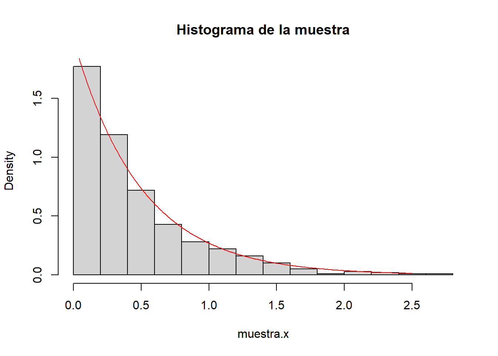
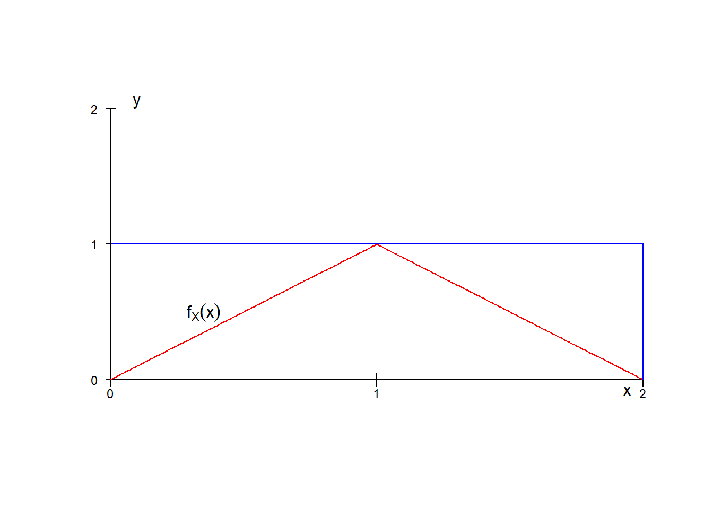
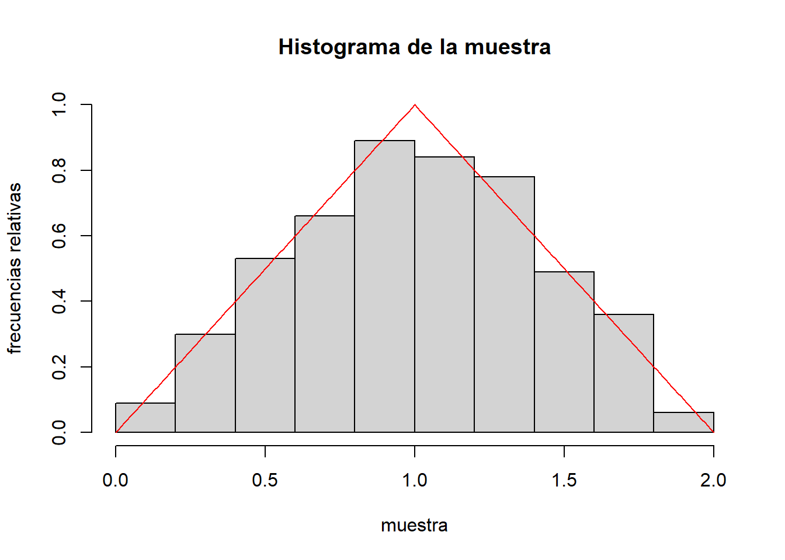
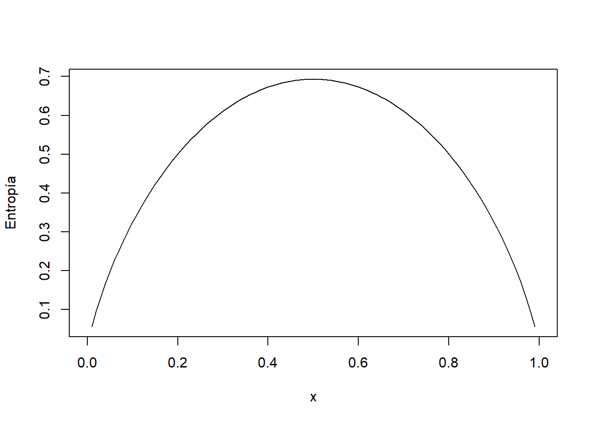
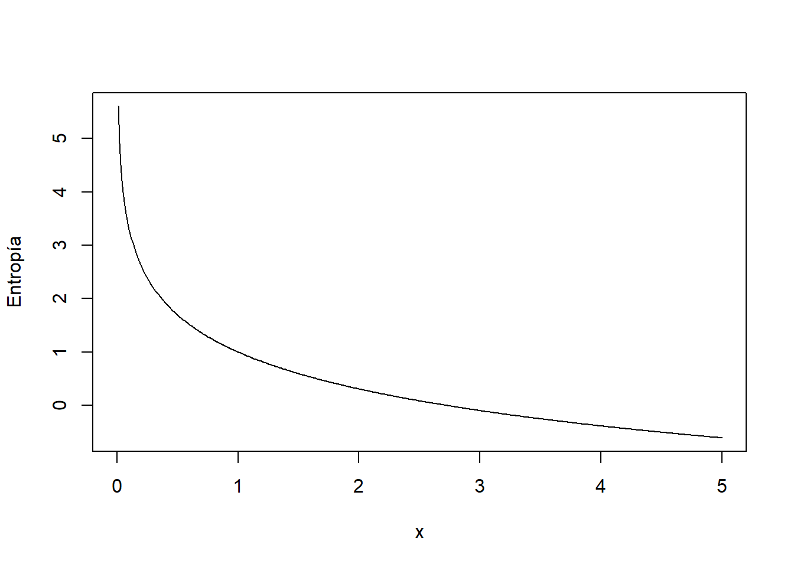

5 Variables Aleatorias. Complementos
5.1 Momentos de variables aleatorias
5.1.1 Momento de orden \(n\)
Los momentos de orden \(n\) caracterizan una variable \(X\). O sea, que si conocemos todos los momentos de orden \(n\), podemos deducir cuál es la distribución de \(X\).
En general, el cálculo de los momentos de orden \(n\) para una variable \(X\) es bastante tedioso.
Ejemplos de momentos de orden \(n\)
Ejemplo: momento de orden \(n\) de una variable de Bernoulli de parámetro \(p\)
Sea \(X\) una variable de Bernoulli de parámetro \(p\). Recordemos que su función de probabilidad es: \[ P_X(0)=q=1-p,\ p_X(1)=p. \] Su momento de orden \(n\) será: \[ m_n = E\left(X^n\right)=p\cdot 1^n+(1-p)\cdot 0^n = p. \] En este caso, todos los momentos de orden \(n\) valen \(p\).
Ejemplo: momento de orden \(n\) de una variable exponencial de parámetro \(\lambda\)
Consideremos ahora una variable \(X\) exponencial de parámetro \(\lambda\).
Recordemos que su función de densidad es: \(f_X(x)=\lambda \mathrm{e}^{-\lambda x},\) para \(x\geq 0\) y \(0\), en caso contrario.
Su momento de orden \(n\) será: \[ m_n = E\left(X^n\right)=\int_0^\infty \lambda \mathrm{e}^{-\lambda x} x^n\, dx =\frac{n!}{\lambda^n}. \]
La expresión anterior se puede obtener integrando por partes \(n\) veces y resolviendo los límites correspondientes. Dejámos al lector los cálculos correspondientes.
Fijémonos que los momentos de orden \(n\) tienden a infinito a medida que \(n\) crece: \(\lim\limits_{n\to\infty}m_n = \lim\limits_{n\to\infty}\frac{n!}{\lambda^n}=\infty\).
Ejemplo: momento de orden \(n\) de una variable normal de parámetros \(m=0\) y \(\sigma =1\)
Recordemos que su función de densidad es: \(f_X(x)=\frac{1}{\sqrt{2\pi}}\mathrm{e}^{-\frac{x^2}{2}},\) para \(x\in \mathbb{R}\).
Su momento de orden 1 será la esperanza de \(X\): \(m_1 = 0\) i su momento de orden 2 será: \(m_2 = E\left(X^2\right)=\int_{-\infty}^\infty \frac{1}{\sqrt{2\pi}}\mathrm{e}^{-\frac{x^2}{2}}\cdot x^2\, dx = 1.\) La integral anterior se resuelve usando técnicas de integrales de dos variables. Dicho valor también se puede obtener usando que su varianza vale 1: \(m_2 = \mathrm{Var}(X)+E(X)^2 = \sigma^2 +0^2 = 1.\)
Los momentos de orden impar \(n\) serán cero ya que integramos una función impar: \(m_n = E\left(X^n\right)=\int_{-\infty}^\infty \frac{1}{\sqrt{2\pi}}\mathrm{e}^{-\frac{x^2}{2}}\cdot x^n\, dx = 0.\) O sea, si consideramos \(g(x)=\frac{1}{\sqrt{2\pi}}\mathrm{e}^{-\frac{x^2}{2}}\cdot x^n\), se verifica \(g(-x)=-g(x)\), para todo \(x\in\mathbb{R}\).
Si intentamos calcular el momento de orden 4, obtenemos: \(m_4 = E\left(X^4\right)=\int_{-\infty}^\infty \frac{1}{\sqrt{2\pi}}\mathrm{e}^{-\frac{x^2}{2}}\cdot x^4\, dx = 3,\) usando técnicas de integración de dos variables otra vez.
5.1.2 Momento central de orden \(n\)
Los momentos centrales de orden \(n\) caracterizan también una variable \(X\). O sea, que si conocemos todos los momentos centrales de orden \(n\), podemos deducir cuál es la distribución de \(X\).
Demostración
Recordemos la definición de momento central de orden \(n\) y desarrollemos su expresión aplicando el binomio de Newton: \[ \mu_n = E\left((X-\mu)^n\right) =E\left(\sum_{k=0}^n (-1)^{n-k} \binom{n}{k} X^k\mu^{n-k}\right). \] Aplicando la propiedad de la esperanza que la esperanza de la suma es la suma de esperanzas, obtenemos la expresión dada por la proposición: \[ \mu_n =\sum_{k=0}^n (-1)^{n-k} \binom{n}{k} \mu^{n-k} E\left(X^k\right) = \sum_{k=0}^n (-1)^{n-k} \binom{n}{k} \mu^{n-k} m_k. \]
Ejemplos de momentos centrales de orden \(n\)
Ejemplo: momento central de orden \(n\) de una variable de Bernoulli de parámetro \(p\)
Sea \(X\) una variable de Bernoulli de parámetro \(p\). Recordemos que su función de probabilidad es: \[ P_X(0)=q=1-p,\ P_X(1)=p. \] Usando que \(E(X)=p\), su momento central de orden \(n\) será: \[ \mu_n = E\left((X-p)^n\right)=p\cdot (1-p)^n+(1-p)\cdot (0-p)^n = p(1-p)^n + (-1)^n (1-p) p^n. \]
Ejercicio
Demostrar que la expresión anterior corresponde a un polinomio de grado \(n\).
Ejemplo: momento central de orden \(n\) de una variable exponencial de parámetro \(\lambda\)
Consideremos ahora una variable \(X\) exponencial de parámetro \(\lambda\).
Recordemos que su función de densidad es: \(f_X(x)=\lambda \mathrm{e}^{-\lambda x},\) para \(x\geq 0\).
Usando que \(E(X)=\frac{1}{\lambda}\), su momento central de orden \(n\) será: \[ \mu_n = E\left(\left(X-\frac{1}{\lambda}\right)^n\right)=\int_0^\infty \lambda \mathrm{e}^{-\lambda x} \left(x-\frac{1}{\lambda}\right)^n\, dx =\frac{a_n}{\lambda^n}, \] donde \(a_n = n!\sum\limits_{k=0}^n \frac{(-1)^k}{k!}.\)
La expresión anterior fijado \(n\) se puede obtener integrando por partes \(n\) veces y resolviendo los límites correspondientes. Dejámos al lector los cálculos correspondientes. Sin embargo, la obtención de la fórmula general para \(n\) se sale del nivel del curso.
Fijémonos que los momentos centrales de orden \(n\) también tienden a infinito a medida que \(n\) crece: \(\lim\limits_{n\to\infty}\mu_n = \lim\limits_{n\to\infty}\frac{a_n}{\lambda^n}=\infty\): \[ \lim_{n\to\infty}\mu_n =\lim_{n\to\infty} \frac{n!\sum\limits_{k=0}^n \frac{(-1)^k}{k!}}{\lambda^n}= \lim_{n\to\infty}\sum\limits_{k=0}^n \frac{(-1)^k}{k!}\cdot \lim_{n\to\infty} \frac{n!}{\lambda^n}= \mathrm{e}^{-1}\cdot \infty = \infty. \]
Ejemplo: momento central de orden \(n\) de una variable normal de parámetros \(\mu\) y \(\sigma\)
Recordemos que su función de densidad es: \(f_X(x)=\frac{1}{\sqrt{2\pi}\sigma}\mathrm{e}^{-\frac{(x-\mu)^2}{2\sigma^2}},\) para \(x\in \mathbb{R}\).
Su momento central de orden 2 será la varianza \(\sigma^2\): \(\mu_2 =\sigma^2.\)
Los momentos centrales de orden impar \(n\) serán cero ya que integramos una función impar respecto \(x=\mu\): \(\mu_n = E\left((X-\mu)^n\right)=\int_{-\infty}^\infty \frac{1}{\sqrt{2\pi}\sigma}\mathrm{e}^{-\frac{(x-\mu)^2}{2\sigma^2}}\cdot (x-\mu)^n\, dx = 0.\) O sea, si consideramos \(g(x)=\frac{1}{\sqrt{2\pi}\sigma}\mathrm{e}^{-\frac{(x-\mu)^2}{2\sigma^2}}\cdot (x-\mu)^n\), se verifica \(g(\mu-x)=-g(\mu +x)\), para todo \(x\in\mathbb{R}\).
Si intentamos calcular el momento central de orden 4, obtenemos: \(\mu_4 = E\left((X-\mu)^4\right)=\int_{-\infty}^\infty \frac{1}{\sqrt{2\pi}\sigma}\mathrm{e}^{-\frac{(x-\mu)^2}{2\sigma^2}}\cdot (x-\mu)^4\, dx = 3\sigma^4.\) La integral anterior puede resolverse con el cambio de variable \(t=\frac{x-\mu}{\sigma}\) y usando que: \(\int_{-\infty}^\infty \frac{1}{\sqrt{2\pi}}\mathrm{e}^{-\frac{x^2}{2}}\cdot x^4\, dx = 3.\)
5.2 Asimetría de una variable aleatoria
Una variable aleatoria tiene asimetría positiva si su función de densidad o de probabilidad presenta una cola a la derecha y asimetría negativa, si su función de densidad o de probabilidad presenta cola a la izquierda.
Por ejemplo, en la figura siguiente, vemos la gráfica de la función de probabilidad de una variable aleatoria que presenta asimetría negativa a la izquierda y una función de densidad de una variable aleatoria que presenta asimetría positiva a la derecha:
¿Cómo calcular la asimetría de una variable aleatoria?
La asimetría de una variable aleatoria \(X\) se calcula a partir de sus momentos centrales de segundo y tercer orden: \[ \gamma_1 = E\left({\left(\frac{X-\mu}{\sigma}\right)}^3\right)=\frac{\mu_3}{\sigma^3}, \] donde \(\mu = E(X)\) y \(\sigma^2 =\mathrm{Var}(X)\).
Dicho valor se denomina coeficiente de asimetría de Pearson.
Usando la relación ya vista entre los momentos centrales y los momentos, podemos expresar el coeficiente de asimetría en función de los momentos: \[ \gamma_1 = \frac{m_3 -3\mu\sigma^2-\mu^3}{\sigma^3}. \] Dejamos al lector la comprobación de la expresión anterior.
Por tanto, una variable aleatoria \(X\) tendrá simetría positiva o a la derecha si \(\gamma_1 >0\) y tendrá asimetría negativa o a la izquierda, si \(\gamma_1 <0\).
Ejemplo: cálculo del coeficiente de asimetría para una variable de Bernoulli de parámetro \(p\)
Sea \(X\) una variable de Bernoulli de parámetro \(p\). Usando que \(m_n =p\), para todo \(n\) y que \(\mu_2 = \sigma^2 = p-p^2\), el coeficiente de asimetría \(\gamma_1\) será: \[ \gamma_1 = \frac{p-3p(p-p^2)-p^3}{\sqrt{(p-p^2)^3}} = \frac{p (1-p) (1-2p)}{{\sqrt{(p-p^2)^3}}}. \] Por tanto, la variable de Bernoulli de parámetro \(p\) tendrá simetria negativa si \(p>\frac{1}{2}\) y positiva, si \(p<\frac{1}{2}\):

Ejemplo: cálculo del coeficiente de asimetría para una variable exponencial de parámetro \(\lambda\)
Sea \(X\) una variable exponencial de parámetro \(\lambda\). Usando que \(\sigma^2=\frac{1}{\lambda^2}\) y \(\mu_3 =\frac{a_3}{\lambda^3}=\frac{2}{\lambda^3}\), su coeficiente de asimetría de Pearson será: \(\gamma_1 = \frac{\frac{2}{\lambda^3}}{\frac{1}{\lambda^3}}=2.\)
Entonces presenta asimetría positiva o a la derecha tal como se observa en su función de densidad:

Ejemplo: cálculo del coeficiente de asimetría para una variable normal de parámetros \(\mu\) y \(\sigma\)
Sea \(X\) una variable aleatoria normal de parámetros \(\mu\) y \(\sigma\).
Tal como se ha indicado anteriormente, los momentos centrales de orden impar son nulos.
Por tanto, en este caso \(\mu_3=0\) y, por tanto, \(\gamma_1=0\).
Deducimos que la distribución normal es totalmente simétrica.
De hecho, usando que su función de densidad es \(f_X(x)=\frac{1}{\sqrt{2\pi}\sigma}\mathrm{e}^{-\frac{(x-\mu)^2}{2\sigma^2}},\) para \(x\in \mathbb{R}\), se puede comprobar que \(f_X(\mu-x)=f_X(\mu +x)\), o sea, tiene el eje de simetría \(x=\mu\):

5.3 Curtosis o apuntamiento de una variable aleatoria
La curtosis de una variable aleatoria \(X\) es una medida de cómo son las colas de su función de densidad.
Dicho en otras palabras, queremos medir de alguna manera la tendencia que tiene la variable aleatoria a tener valores atípicos o outliers.
La manera estándard de medir la curtosis de una variable aleatoria \(X\) es a partir de su momento central de cuarto orden: \[ \gamma_2 = E\left(\left(\frac{X-\mu}{\sigma}\right)^4\right) = \frac{\mu_4}{\sigma^4}, \] donde recordemos que \(\mu=E(X)\) y \(\sigma^2 =\mathrm{Var}(X)\).
A la expresión anterior se le denomina medida de curtosis de Pearson.
Diremos que una variable aleatoria no tiene exceso de curtosis o mesocúrtica si \(\gamma_2 \approx 3\).
Diremos que una variable aleatoria tiene exceso positivo de curtosis o leptocúrtica si \(\gamma_2 >3\).
Diremos que una variable aleatoria tiene exceso negativo de curtosis o platicúrtica si \(\gamma_2 <3\).
Ejemplo: cálculo del coeficiente de curtosis para una variable de Bernoulli de parámetro \(p\)
Sea \(X\) una variable aleatoria de parámetro \(p\).
El momento central de cuarto orden de \(X\) será: \[ \mu_4 = p (1-p)^4 +(1-p)p^4 = p (1-p) (3 p^2-3p+1). \] La medida de curtosis de Pearson será: \[ \gamma_2 = \frac{p (1-p) (3 p^2-3p+1)}{p^2 (1-p)^2} = \frac{3 p^2-3p+1}{p(1-p)}. \] Se puede comprobar (ejercicio para el lector) que si \(p\in \left(\frac{3-\sqrt{3}}{6},\frac{3+\sqrt{3}}{6}\right)\approx (0.211,0.789)\), \(\gamma_2 <3\) y, por tanto \(X\) será platicúrtica y en caso contrario, si \(p\in \left(0,\frac{3-\sqrt{3}}{6}\right)\cup \left(\frac{3+\sqrt{3}}{6},1\right)\), \(\gamma_2 >3\) y, por tanto, \(X\) será leptocúrtica.
Ejemplo: cálculo del coeficiente de curtosis para una variable exponencial de parámetro \(\lambda\)
Sea \(X\) una variable exponencial de parámetro \(\lambda\). Usando que \(\sigma^2=\frac{1}{\lambda^2}\) y \(\mu_4 =\frac{a_4}{\lambda^3}=\frac{9}{\lambda^4}\), su coeficiente de asimetría de Pearson será: \(\gamma_2 = \frac{\frac{9}{\lambda^4}}{\frac{1}{\lambda^4}}=9.\)
Como \(\gamma_2 >3\), se trataría de una distribución leptocúrtica.
Ejemplo: cálculo del coeficiente de curtosis para una variable normal de parámetros \(\mu\) y \(\sigma\)
Sea \(X\) una variable aleatoria normal de parámetros \(\mu\) y \(\sigma\).
Tal como se ha indicado anteriormente, el momento central de orden 4 vale: \(\mu_4 = 3\sigma^4\).
Su coeficiente de curtosis será: \[ \gamma_2 =\frac{\mu_4}{\sigma^4}=\frac{3\sigma^4}{\sigma^4}=3. \] Deducimos, por tanto, que toda distribución normal es mesocúrtica o no tiene exceso (ni positivo ni negativo) de curtosis.
5.4 Métodos de transformación
Hemos visto anteriormente que el cálculo de los momentos o los momentos centrados de una variable aleatoria \(X\) puede ser muy complicado y muy tedioso.
Por dicho motivo, vamos a introducir un conjunto de funciones que nos permitirán calcular los momentos de la variable \(X\) de forma relativamente sencilla.
5.4.1 Función generatriz de momentos
Sea \(t\in\mathbb{R}\) un valor real cualquiera.
Definimos la función generatriz de momentos \(m_X(t)\) en el valor \(t\) como: \(m_X(t)=E\left(\mathrm{e}^{tX}\right).\)
Ejemplo: cálculo de la función generatriz de momentos para una variable de Bernoulli de parámetro \(p\)
Sea \(X\) una variable aleatoria de Bernoulli de parámetro \(p\). Recordemos que su función de probabilidad es: \[ P_X(0)=q=1-p,\ p_X(1)=p. \] Su función generatriz de momentos será: \[ m_X (t)=E\left(\mathrm{e}^{tX}\right) =p\mathrm{e}^{t\cdot 1}+(1-p)\mathrm{e}^{t\cdot 0}=p\mathrm{e}^t+(1-p)=1+p\left(\mathrm{e}^t -1 \right). \]
Ejemplo: cálculo de la función generatriz de momentos para una variable exponencial de parámetro \(\lambda\)
Sea \(X\) una variable aleatoria exponencial de parámetro \(\lambda\). Recordemos que su función de densidad es: \(f_X(x)=\lambda \mathrm{e}^{-\lambda x},\) para \(x\geq 0\) y \(0\), en caso contrario.
Su función generatriz de momentos será: \[ m_X (t)=E\left(\mathrm{e}^{tX}\right)=\int_0^\infty \mathrm{e}^{t x}\lambda \mathrm{e}^{-\lambda x}\, dx = \lambda \int_0^\infty\mathrm{e}^{(t-\lambda)x}\, dx = \lambda\left[\frac{\mathrm{e}^{(t-\lambda)x}}{t-\lambda}\right]_{x=0}^{x=\infty} = \frac{\lambda}{\lambda -t},\ \mbox{si } t<\lambda. \] En este caso vemos que el dominio de la función generatriz de momentos \(m_X\) es \((-\infty,\lambda)\), ya que si \(t\geq \lambda\), la integral anterior no es convergente.
Fijémonos por lo que vendrá más adelante que, como \(\lambda >0\), el valor \(0\) pertenece al dominio de \(m_X\).
Ejemplo: cálculo de la función generatriz de momentos para una variable normal de parámetros \(\mu\) y \(\sigma\)
Sea \(X\) una variable normal de parámetros \(\mu\) y \(\sigma\).
Recordemos que su función de densidad es: \(f_X(x)=\frac{1}{\sqrt{2\pi}\sigma}\mathrm{e}^{-\frac{(x-\mu)^2}{2\sigma^2}},\) para \(x\in \mathbb{R}\).
Su función generatriz de momentos será:
\[ \begin{array}{rl} m_X (t) & =E\left(\mathrm{e}^{tX}\right)=\displaystyle\int_{-\infty}^\infty \mathrm{e}^{tx}\frac{1}{\sqrt{2\pi}\sigma}\mathrm{e}^{-\frac{(x-\mu)^2}{2\sigma^2}}\, dx = \frac{1}{\sqrt{2\pi}\sigma} \int_{-\infty}^\infty \mathrm{e}^{tx-\frac{(x-\mu)^2}{2\sigma^2}}\, dx \\[1ex] & = \displaystyle\frac{1}{\sqrt{2\pi}\sigma} \int_{-\infty}^\infty \mathrm{e}^{-\frac{1}{2\sigma^2}\left((x-(\sigma^2 t+\mu))^2-2\sigma^2 t \mu-\sigma^4t^2\right)}\, dx = \frac{1}{\sqrt{2\pi}\sigma} \mathrm{e}^{\frac{1}{2}(2 t \mu +\sigma^2 t^2)}\int_{-\infty}^\infty \mathrm{e}^{-\frac{1}{2\sigma^2}(x-(\sigma^2 t+\mu))^2}\, dx\\[1ex] & = \displaystyle\mathrm{e}^{\frac{1}{2}(2 t \mu +\sigma^2 t^2)} \left( \frac{1}{\sqrt{2\pi}\sigma} \int_{-\infty}^\infty \mathrm{e}^{-\frac{1}{2\sigma^2}(x-(\sigma^2 t+\mu))^2}\, dx\right) = \mathrm{e}^{ t \mu +\frac{\sigma^2 t^2}{2}}. \end{array} \] La integral del último paréntesis se resuelve haciento el cambio de variable \(u=x-\sigma^2 t\) y usando que la integral de la función de densidad de \(X\) sobre todo \(\mathbb{R}\) vale 1.
Relación entre la función generatriz de momentos y los momentos
La razón del nombre que lleva la función generatriz de momentos es que podemos obtener todos los momentos de la variable a partir de ella:
Demostración
Recordemos la definición de la función generatriz de momentos: \(m_X(t)=E\left(\mathrm{e}^{tX}\right).\)
La idea de la demostración es probar por inducción que \(m_X^{(n)}(t) =E\left(\mathrm{e}^{tX}\cdot X^n\right)\).
Veámoslo para \(n=1\): \(m_X'(t)=E\left(\mathrm{e}^{tX}\cdot X\right)\).
Seguidamente, apliquemos inducción sobre \(n\). Supongamos que \(m_X^{(n)}(t) =E\left(\mathrm{e}^{tX}\cdot X^n\right)\) y veamos que \(m_X^{(n+1)}(t) =E\left(\mathrm{e}^{tX}\cdot X^{n+1}\right)\): \(m_X^{(n+1)}(t) =\frac{d}{dt}(m_X^{(n)}(t)) =\frac{d}{dt}E\left(\mathrm{e}^{tX}\cdot X^n\right) = E\left(\mathrm{e}^{tX}\cdot X^{n+1}\right),\) tal como queríamos demostrar.
Ahora si aplicamos la expresión demostrada \(m_X^{(n)}(t) =E\left(\mathrm{e}^{tX}\cdot X^n\right)\) a \(t=0\), obtenemos: \(m_X^{(n)}(0) =E\left(X^n\right)=m_n,\) tal como dice la proposición.
Ejemplo: aplicación de la proposición en el caso en que \(X\) es una variable de Bernoulli de parámetro \(p\)
En este caso, recordemos que: \(m_X (t)=1+p\left(\mathrm{e}^t -1 \right).\)
Se puede comprobar que \(m_X^{(n)}(t)=p\mathrm{e}^t\). Por tanto: \[ m_n = m_X^{(n)}(0)=p, \] tal como habíamos calculado anteriormente.
Ejemplo: aplicación de la proposición en el caso en que \(X\) es una variable exponencial de parámetro \(\lambda\)
En este caso, recordemos que: \(m_X (t)=\frac{\lambda}{\lambda -t},\) para \(t<\lambda\) pero como \(\lambda >0\), \(t=0\) cumple la expresión anterior.
Dejamos como ejercicio para el lector comprobar que: \(m_X^{(n)}(t)=\frac{\lambda n!}{(\lambda-t)^{n+1}}\).
Por tanto: \[ m_n = m_X^{(n)}(0) = \frac{\lambda n!}{\lambda^{n+1}}=\frac{n!}{\lambda^n}, \] expresión que ya habíamos obtenido anteriormente.
Ejemplo: aplicación de la proposición en el caso en que \(X\) es una variable normal de parámetros \(\mu\) y \(\sigma\)
En este caso, recordemos que: \(m_X (t)=\mathrm{e}^{ t \mu +\frac{\sigma^2 t^2}{2}}.\)
Aplicando la fórmula de los momentos para \(n=1\) obtenemos: \(m'(t)=\mathrm{e}^{ t \mu +\frac{\sigma^2 t^2}{2}} \left(\mu+t\sigma^2\right)\), que en \(t=0\) vale: \(m'(0)=\mu=E(X)\), tal como ya sabemos.
Si la aplicamos para \(n=2\), obtenemos: \(m''(t)=\mathrm{e}^{ t \mu +\frac{\sigma^2 t^2}{2}} \left((\mu+t\sigma^2)^2+ \sigma^2 \right) =\mathrm{e}^{ t \mu +\frac{\sigma^2 t^2}{2}} \left(t^2\sigma^4+\mu^2+\sigma^2+ 2t\mu\sigma^2 \right)\), que en \(t=0\) vale: \(m''(0)=\mu^2+\sigma^2=E\left(X^2\right)\), tal como ya sabemos.
Para \(n=3\)m obtenemos: \(m'''(t)=e^{\mu t+\frac{\sigma ^2 t^2}{2}}\left(\mu +\sigma ^2 t\right) \left(\left(\mu +\sigma ^2 t\right)^2+3 \sigma ^2\right)\), que en \(t=0\) vale: \(m'''(0)=3\sigma^2\mu = E\left(X^3\right)\), valor que correspondería al momento de tercer orden de \(X\).
Por último, para \(n=4\), obtenemos: \(m^{(iv)}(t)=e^{\mu t+\frac{\sigma ^2 t^2}{2}} \left(6 \sigma ^2 \left(\mu +\sigma ^2 t\right)^2+\left(\mu +\sigma ^2 t\right)^4+3 \sigma ^4\right)\), que en \(t=0\) vale: \(m^{(iv)}(0)=6\sigma^2\mu^2+\mu^4+3\sigma^4=E\left(X^4\right)\), valor que correspondería al momento de cuarto orden de \(X\).
5.4.2 Función característica
Sea \(w\in\mathbb{R}\) un valor real cualquiera.
Definimos la función característica \(\phi_X(w)\) en el valor \(w\) como: \(\phi_X(w)=E\left(\mathrm{e}^{\mathrm{i} w X}\right),\) donde \(\mathrm{i}\) es el número complejo \(\mathrm{i}=\sqrt{-1}\).
Por tanto, usando la fórmula de la antitransformada de Fourier, podemos escribir la función de densidad \(f_X(x)\) como función de la función característica de \(X\), \(\phi(w)\): \(f_X(x)=\frac{1}{2\pi}\int_{-\infty}^\infty \phi_X(w)\mathrm{e}^{-\mathrm{i}w x}\, dw.\)
En los casos en que los \(x_k\) sean enteros, \(x_k=k\), que son la mayoría, la ecuación anterior es la tranformada de Fourier de la secuencia \(P_X(k)\). Dicha función es una función periódica en \(w\) de periodo \(2\pi\) ya que \(\mathrm{e}^{\mathrm{i}(w+2\pi)k}=\mathrm{e}^{\mathrm{i}wk}.\)
Por tanto, usando la fórmula de inversión, podemos escribir la función de probabilidad \(P_X(k)\) como función de la función característica de \(X\), \(\phi(w)\): \(P_X(k)=\frac{1}{2\pi}\int_{0}^{2\pi} \phi_X(w)\mathrm{e}^{-\mathrm{i}w k}\, dw.\)
Ejemplo: cálculo de la función característica para una variable de Bernoulli de parámetro \(p\)
Sea \(X\) una variable aleatoria de Bernoulli de parámetro \(p\). Recordemos que su función de probabilidad es: \[ P_X(0)=q=1-p,\ p_X(1)=p. \] Su función característica será: \[ \phi_X (w)=E\left(\mathrm{e}^{\mathrm{i}wX}\right) =p\mathrm{e}^{\mathrm{i}w\cdot 1}+(1-p)\mathrm{e}^{\mathrm{i}w\cdot 0}=p\mathrm{e}^{\mathrm{i}w}+(1-p)=1+p\left(\mathrm{e}^{\mathrm{i}w} -1 \right). \] Comprobemos la fórmula de la inversión: \[ \begin{array}{rl} P_X(1) & = \frac{1}{2\pi}\int_0^{2\pi} \left(1+p\left(\mathrm{e}^{\mathrm{i}w} -1 \right)\right) e^{-\mathrm{i}w\cdot 1}\, dw =\frac{1}{2\pi}\left(\int_0^{2\pi} (1-p)e^{-\mathrm{i}w}\, dw + \int_0^{2\pi} p\, dw\right) \\ & = \frac{1}{2\pi}\left( (1-p) \left[\frac{\mathrm{e}^{-\mathrm{i}w}}{-\mathrm{i}}\right]_0^{2\pi} +2\pi p\right)=\frac{1}{2\pi}\left((1-p)\cdot 0 +2\pi p\right)=p, \\ P_X(0) & = \frac{1}{2\pi}\int_0^{2\pi} \left(1+p\left(\mathrm{e}^{\mathrm{i}w} -1 \right)\right) e^{-\mathrm{i}w\cdot 0}\, dw =\frac{1}{2\pi}\left(\int_0^{2\pi} (1-p) \, dw + \int_0^{2\pi} p \mathrm{e}^{\mathrm{i}w}\, dw\right) \\ & = \frac{1}{2\pi}\left( (1-p) \cdot 2\pi +p \left[\frac{\mathrm{e}^{\mathrm{i}w}}{\mathrm{i}}\right]_0^{2\pi}\right)=\frac{1}{2\pi}\left((1-p)\cdot 2\pi + p\cdot 0\right)=1-p. \end{array} \]
Ejemplo: cálculo de la función característica para una variable exponencial de parámetro \(\lambda\)
Sea \(X\) una variable aleatoria exponencial de parámetro \(\lambda\). Recordemos que su función de densidad es: \(f_X(x)=\lambda \mathrm{e}^{-\lambda x},\) para \(x\geq 0\) y \(0\), en caso contrario.
Su función característica será: \[ \phi_X (w)=E\left(\mathrm{e}^{\mathrm{i}wX}\right)=\int_0^\infty \mathrm{e}^{\mathrm{i}w x}\lambda \mathrm{e}^{-\lambda x}\, dx = \lambda \int_0^\infty\mathrm{e}^{(\mathrm{i}w-\lambda)x}\, dx = \lambda\left[\frac{\mathrm{e}^{(\mathrm{i}w-\lambda)x}}{\mathrm{i}w-\lambda}\right]_{x=0}^{x=\infty} = \frac{\lambda}{\lambda -\mathrm{i} w}. \] La expresión anterior es válida para todo \(w\in\mathbb{R}\) ya que su valor sería: \(\phi_X (w)=\frac{\lambda}{\lambda -\mathrm{i} w}\cdot \frac{\lambda +\mathrm{i} w}{\lambda +\mathrm{i} w}=\frac{\lambda^2+\mathrm{i}\lambda w}{\lambda^2+w^2}=\frac{\lambda^2}{\lambda^2+w^2}+\mathrm{i}\frac{\lambda w}{\lambda^2+w^2}.\) En la última expresión hemos separado la parte real de la imaginaria.
Calculemos la función de densidad a partir de la función característica: \[ f_X(x)=\frac{1}{2\pi}\int_{-\infty}^\infty \frac{\lambda}{\lambda -\mathrm{i} w}\mathrm{e}^{-\mathrm{i}wx}\, dw = a\mathrm{e}^{-a x}, \] si \(x>0\) y \(0\) en caso contrario. El cálculo de la integral anterior debe realizarse usando el Teorema de los Residuos, Residue theorem y se sale de los objetivos de este curso.
Ejemplo: cálculo de la función característica para una variable normal de parámetros \(\mu\) y \(\sigma\)
Sea \(X\) una variable normal de parámetros \(\mu\) y \(\sigma\).
Recordemos que su función de densidad es: \(f_X(x)=\frac{1}{\sqrt{2\pi}\sigma}\mathrm{e}^{-\frac{(x-\mu)^2}{2\sigma^2}},\) para \(x\in \mathbb{R}\).
Su función característica será:
\[ \begin{array}{rl} \phi_X (w) & =\displaystyle E\left(\mathrm{e}^{\mathrm{i}w X}\right)=\int_{-\infty}^\infty \mathrm{e}^{\mathrm{i}w x}\frac{1}{\sqrt{2\pi}\sigma}\mathrm{e}^{-\frac{(x-\mu)^2}{2\sigma^2}}\, dx = \frac{1}{\sqrt{2\pi}\sigma} \int_{-\infty}^\infty \mathrm{e}^{\mathrm{i}wx-\frac{(x-\mu)^2}{2\sigma^2}}\, dx \\[1ex] & =\displaystyle \frac{1}{\sqrt{2\pi}\sigma} \int_{-\infty}^\infty \mathrm{e}^{-\frac{1}{2\sigma^2}\left((x-(\sigma^2 \mathrm{i}w+\mu))^2-2\sigma^2 \mathrm{i}w \mu+\sigma^4 w^2\right)}\, dx = \frac{1}{\sqrt{2\pi}\sigma} \mathrm{e}^{\frac{1}{2}(2 \mathrm{i}w \mu -\sigma^2 w^2)}\int_{-\infty}^\infty \mathrm{e}^{-\frac{1}{2\sigma^2}(x-(\sigma^2 \mathrm{i}w+\mu))^2}\, dx\\[1ex] & = \displaystyle\mathrm{e}^{\frac{1}{2}(2 \mathrm{i}w \mu -\sigma^2 w^2)} \left( \frac{1}{\sqrt{2\pi}\sigma} \int_{-\infty}^\infty \mathrm{e}^{-\frac{1}{2\sigma^2}(x-(\sigma^2 \mathrm{i}w+\mu))^2}\, dx\right) = \mathrm{e}^{ \mathrm{i}w \mu -\frac{\sigma^2 w^2}{2}}. \end{array} \] La integral del último paréntesis se resuelve haciento el cambio de variable \(u=x-\sigma^2 \mathrm{i}w\) y usando que la integral de la función de densidad de \(X\) sobre todo \(\mathbb{R}\) vale 1.
Calculemos la función de densidad a partir de la función característica: \[ \begin{array}{rl} f_X(x) & =\displaystyle\frac{1}{2\pi}\int_{-\infty}^\infty \mathrm{e}^{ \mathrm{i}w \mu -\frac{\sigma^2 w^2}{2}}\mathrm{e}^{-\mathrm{i} w x}\, dw = \frac{1}{2\pi}\int_{-\infty}^\infty \mathrm{e}^{\left(\frac{\mathrm{i}w\sigma}{\sqrt{2}}+\frac{\mu-x}{\sigma\sqrt{2}}\right)^2-\frac{(\mu-x)^2}{2\sigma^2}}\, dw =\frac{1}{2\pi}\mathrm{e}^{-\frac{(\mu-x)^2}{2\sigma^2}}\int_{-\infty}^\infty \mathrm{e}^{\left(\frac{\mathrm{i}w\sigma}{\sqrt{2}}+\frac{\mu-x}{\sigma\sqrt{2}}\right)^2}\, dw \\[1ex] & =\displaystyle \frac{1}{2\pi}\mathrm{e}^{-\frac{(x-\mu)^2}{2\sigma^2}}\int_{-\infty}^\infty \mathrm{e}^{-\left(\frac{w\sigma}{\sqrt{2}}+\frac{\mu-x}{\mathrm{i}\sigma\sqrt{2}}\right)^2}\, dw \stackrel{\mbox{cambio de variable } u=\frac{w\sigma}{\sqrt{2}}+\frac{\mu-x}{\mathrm{i}\sigma\sqrt{2}}}{=} \frac{1}{2\pi}\mathrm{e}^{-\frac{(x-\mu)^2}{2\sigma^2}}\int_{-\infty}^\infty \frac{\sqrt{2}}{\sigma}\mathrm{e}^{-u^2}\, du \\[1ex] & \displaystyle\stackrel{\int_{-\infty}^\infty \mathrm{e}^{-u^2}\, du =\sqrt{\pi}}{=} \frac{1}{\sqrt{2}\pi\sigma} \mathrm{e}^{-\frac{(x-\mu)^2}{2\sigma^2}} \sqrt{\pi} = \frac{1}{\sqrt{2\pi}\sigma}\mathrm{e}^{-\frac{(x-\mu)^2}{2\sigma^2}}, \end{array} \] función que coincide con la densidad de la distribución \(N(\mu,\sigma)\).
Relación entre la función característica y los momentos
La relación entre la función característica y los momentos es la siguiente:
Ejercicio
La demostración se realiza de forma similar a la demostración de la proposición que relaciona la función generatriz de momentos y los momentos.
Se deja como ejercicio al lector.
Ejercicio
Realizar los mismos ejemplos que los realizados para la función generatriz de momentos. O sea:
Si \(X\) es una variable de Bernoulli de parámetro \(p\), demostrar usando la función característica que para todo \(n\), \(m_n = E\left(X^n\right)=p\).
Si \(X\) es una variable exponencial de parámetro \(\lambda\), demostrar usando la función característica que para todo \(n\), \(m_n = E\left(X^n\right)=\frac{n!}{\lambda^n}\).
Si \(X\) es una variable normal de parámetros \(\mu\) y \(\sigma\), demostrar usando la función característica que \(E(X)=\mu\), \(E\left(X^2\right)=\mu^2+\sigma^2\), \(E\left(X^3\right)=3\sigma^2\mu\) y \(E\left(X^4\right)=6\sigma^2\mu^2+\mu^4+3\sigma^4\).
5.5 Fiabilidad
Sea \(T\geq 0\) una variable aleatoria que nos da, por ejemplo, el tiempo de vida de cierto componente o dispositivo.
Vamos a definir medidas para estudiar la fiabilidad de este tipo de variables aleatorias.
5.5.1 Tiempo medio de vida
Veámoslo. Para ello basta ver que \(E(T)=\int_0^\infty (1-F_T(t))\, dt\), donde \(F_T(t)\) es la función de distribución de la variable \(T\): \[ \begin{array}{rl} E(T) & =\displaystyle\int_{t=0}^{t=\infty} 1-F_T(t)\, dt=\int_{t=0}^{t=\infty}\int_{u=t}^{u=\infty} f_T(u)\,du\,dt \\[1ex] & =\displaystyle\int_{u=0}^{u=\infty} f_T(u)\int_{t=0}^{t=u} \, dt\, du =\int_{u=0}^{u=\infty} f_T(u)\cdot u\, du = E(T), \end{array} \] donde \(f_T(u)\) seria la función de densidad de la variable \(T\) en el valor \(u\).
Ejemplo
Sea \(T\) una variable aleatoria exponencial de parámetro \(\lambda\).
La fiabilidad de \(T\) sería: \(R(t)=P(T>t)=1-F_T(t)=\mathrm{e}^{-\lambda t}\):
5.6 Generación de muestras de variables aleatorias por ordenador
La simulación por computadora de cualquier fenómeno aleatorio implica la generación de variables aleatorias con distribuciones prefijadas de antemano.
Por ejemplo, la simulación de un sistema de colas implica generar el tiempo entre las llegadas de los clientes, así como los tiempos de servicio de cada cliente.
Fijémonos que fijar la variable aleatoria \(X\) es equivalente a fijar la función de distribución \(F_X(x)\) o la función de densidad \(f_X(x)\) en el caso continuo o la función de probabilidad \(P_X(x)\) en el caso discreto.
Todos los métodos que vamos a describir presuponen que podemos generar números aleatorios que se distribuyen uniformemente entre 0 y 1. En R se puede hacer usando la función runif(n), donde n es la cantidad de números aleatorios entre 0 y 1 a generar.
5.6.1 Método de transformación
El método de transformación se basa en el resultado siguiente:
Demostración:
Claramente, por propia definición de \(Y\), tenemos que el dominio de \(Y\) es \([0,1]\) ya que el conjunto recorrido de la función de distribución de cualquier variable es el intervalo \([0,1]\).
Para ver que la distribución de \(Y\) es \(U[0,1]\) basta comprobar que \(F_Y(y)=y\), para todo \(y\in [0,1]\): \[ \begin{array}{rl} F_Y(y) & =P(Y\leq y)=P(F_X(X)\leq y)\stackrel{\mbox{usando que $F_X$ es estrictamente creciente}}{=} P(X\leq F_X^{-1}(y)) \\ & =F_X(F_X^{-1}(y))=y. \end{array} \]
Usando la proposición anterior, dada una variable \(X\), como la distribución de la variable aleatoria \(Y=F_X(X)\) es \(U[0,1]\), si hacemos \(X=F_X^{-1}(Y)\), tendremos que si sabemos generar una muestra de \(Y\), aplicándole a la muestra la función \(F_X^{-1}\) tendremos generada una muestra de \(X\).
Ejemplo: generar una muestra de una variable exponencial de parámetro \(\lambda\)
Recordemos que si \(X\) es exponencial de parámetro \(\lambda\), su función de distribución es: \(F_X(x)=1-\mathrm{e}^{-\lambda x}\).
Hallemos a continuación \(F_X^{-1}\): \[ y=1-\mathrm{e}^{-\lambda x},\ \Leftrightarrow 1-y=\mathrm{e}^{-\lambda x},\ \Leftrightarrow \ln(1-y)=-\lambda x,\ \Leftrightarrow x=-\frac{1}{\lambda}\ln(1-y). \] Por tanto, \(F_X^{-1}(y)=-\frac{1}{\lambda}\ln(1-y)\).
Generemos una muestra con R de 25 valores de una variable exponencial de parámetro \(\lambda=2\) usando el método anterior:
n=25
lambda=2
muestra.y = runif(n)
muestra.x = -(1/lambda)*log(1-muestra.y)
muestra.x [1] 0.15180860 0.37232459 1.10938234 0.01363114 0.02497869 0.12913003
[7] 0.06869490 0.16503293 0.02769114 1.72580033 0.21095823 0.43858898
[13] 1.19300954 0.74605377 0.39200164 0.62509776 0.04245918 0.16351714
[19] 0.25378997 0.36720423 0.45184400 0.47511264 1.08034369 0.45831998
[25] 0.78862207Vamos a testear si nuestro método funciona.
Para ello generaremos una muestra de 500 valores usando el método de transformación y dibujaremos su histograma de frecuencias relativas.
Seguidamente dibujaremos la función de densidad de la variable exponencial de parámetro \(\lambda\) y compararemos los resultados:
n=500
lambda=2
muestra.y = runif(n)
muestra.x = -(1/lambda)*log(1-muestra.y)
hist(muestra.x,freq=FALSE,main="Histograma de la muestra")
x2=seq(from=0,to=2.5,by=0.01)
lines(x2,dexp(x2,lambda),col="red")
5.6.2 Método de rechazo
Sea \(X\) una variable aleatoria continua tal que su función de densidad verifica:
- Existen valores \(a\) y \(b\) tal que \(f_X(x)= 0\) si \(x\not\in [a,b]\).
- Existen valores \(c\) y \(d\) tal que \(f_X(x)\in [c,d]\), si \(x\in [a,b]\).
En resumen, los puntos \((x,f(x))\) pertenecen al rectángulo \([a,b]\times [c,d]\) y en caso contrario \(f_X(x)=0\).
En el gráfico siguiente, \(a=0\), \(b=2\), \(c=0\) y \(d=1\).

Para generar una muestra aleatoria de la variable \(X\), hacemos lo siguiente:
generamos un valor aleatorio \(x\) entre \(a\) y \(b\).
generamos un valor aleatorio \(y\) entre \(c\) y \(d\).
si \(y\leq f_X(x)\), aceptamos \(x\) como valor de la muestra. En caso contrario, volvemos a empezar en 1.
Ejemplo
El gráfico de la figura anterior corresponde a la función de densidad siguiente: \[ f_X(x)=\begin{cases} x, & \mbox{ si }0\leq x\leq 1,\\ 2-x, & \mbox{ si }1\leq x\leq 2,\\ 0, & \mbox{en caso contrario.} \end{cases} \]
Vamos a generar una muestra de \(25\) valores usando el método del rechazo:
a=0; b=2; c=0; d=1; n=25; i=1;
f = function(x){ifelse(x>=0 & x<=1,x,ifelse(x>=1&x<=2,2-x,0))}
muestra=c()
while(i <=n){
x=runif(1,a,b)
y=runif(1,c,d)
if(y <= f(x)){muestra=c(muestra,x); i=i+1}
}
muestra [1] 0.8934245 1.0241151 0.7485943 1.1318743 1.1174486 0.8956145 1.6270601
[8] 0.6737312 0.9584882 0.5762514 0.7390811 0.4276671 1.5210227 0.8506008
[15] 0.4126257 0.9897587 1.2166050 1.6098125 0.8727734 0.8756381 1.4853939
[22] 1.1539542 1.2353779 0.5157756 1.2873756Como hicimos con el ejemplo del método de transformación, vamos a generar una muestra de 500 valores de la variable \(X\), vamos a dibujar el histograma de frecuencias relativas junto con la función de densidad para ver si ésta se aproxima a dicho histograma:
a=0; b=2; c=0; d=1; n=500; i=1;
f = function(x){ifelse(x>=0 & x<=1,x,ifelse(x>=1&x<=2,2-x,0))}
muestra=c()
while(i <=n){
x=runif(1,a,b)
y=runif(1,c,d)
if(y <= f(x)){muestra=c(muestra,x); i=i+1}
}
hist(muestra,freq=FALSE,main="Histograma de la muestra")
x2=seq(from=0,to=2,by=0.01)
lines(x2,f(x2),col="red")
5.7 Entropía
La entropía es una medida de la incertidumbre en un experimento aleatorio.
Veremos cómo la entropía cuantifica la incertidumbre por la cantidad de información requerida para especificar el resultado de un experimento aleatorio.
5.7.1 Entropía de una variable aleatoria
Supongamos que tenemos una variable aleatoria \(X\) discreta con valores enteros: \(D_X=\{1,2,\ldots,N\}\).
Sea \(k\in D_X\) un valor de la variable. Estamos interesados en cuantificar la incertidumbre del suceso \(A_k =\{X=k\}\).
O sea, cuánta menos incertidumbre tenga \(A_k\), más alta será su probabilidad, y cuánta más incertidumbre, menos probabilidad de aparecer \(A_k\).
Una medida que cumple las condiciones anteriores es la siguiente: \(I(A_k)=I(\{X=k\})=\ln\left(\frac{1}{P(X=k)}\right)=-\ln\left(P(X=k)\right).\)
Por ejemplo, si \(P(A_k)=1\), o sea, \(A_k\) aparece “seguro”, entonces tiene incertidumbre nula, \(I(A_k)=0\), y si \(P(A_k)=0\), o sea, \(A_k\) no aparece “nunca”, tiene incertidumbre máxima, \(I(A_k)=\infty\).
La motivación anterior hace que definamos la entropía de una variable aleatoria de la forma siguiente:
Ejemplo: entropía de una variable de Bernoulli de parámetro \(p\)
Sea \(X\) una variable de Bernoulli de parámetro \(p\).
Recordemos que su función de probabilidad \(P_X\) es: \(P_X(0)=1-p=q,\) \(P_X(1)=p\).
La entropía de \(X\) será: \[ H_X = E\left(-\ln(P_X)\right) = -(1-p)\cdot \ln(1-p)-p\cdot \ln p. \] El gráfico de la entropía se puede observar en el gráfico siguiente donde \(X\) tiene entropía máxima cuando \(p=\frac{1}{2}\) que sería cuando \(X\) tiene incertidumbre máxima al tratar de adivinar el resultado de \(X\) y \(X\) tiene entropía mínima cuando \(p=0\) o \(p=1\) ya que en estos casos el resultado de \(X\) sería siempre \(0\) o \(1\), respectivamente.

Ejemplo: Entropía de una variable aleatoria exponencial de parámetro \(\lambda\)
Sea \(X\) una variable aleatoria exponencial de parámetro \(\lambda\).
Recordemos que su función de densidad es: \(f_X(x)=\lambda \mathrm{e}^{-\lambda x}\), si \(x\geq 0\) y \(f_X(x)=0\), en caso contrario.
Su entropía será: \[ \begin{array}{rl} H_X & = \displaystyle E\left(-\ln(f_X)\right)=-\int_0^\infty \ln\left(\lambda\mathrm{e}^{-\lambda x}\right)\lambda\mathrm{e}^{-\lambda x}\, dx = -\lambda \int_0^\infty (\ln(\lambda) -\lambda x)\mathrm{e}^{-\lambda x}\, dx \\[1ex] & =\displaystyle -\ln (\lambda)\int_0^\infty \lambda\mathrm{e}^{-\lambda x}\, dx+\lambda \int_0^\infty \lambda x \mathrm{e}^{-\lambda x}\, dx =-\ln(\lambda)\int_0^\infty f_X(x)\, dx +\lambda E(X)\\[1ex] & =\displaystyle -\ln(\lambda)+\lambda \frac{1}{\lambda} =1-\ln(\lambda). \end{array} \] El gráfico de la entropía se puede observar en el gráfico siguiente donde \(X\) tiene entropía máxima cuando \(\lambda=0\) que sería cuando \(X\) tiene incertidumbre máxima al tratar de adivinar el resultado de \(X\) al tener media \(E(X)=\frac{1}{\lambda}=\infty\) y \(X\) tiene entropía mínima cuando \(\lambda\) tiende a \(\infty\) ya que su media \(E(X)=\frac{1}{\lambda}\) tendería a 0.
